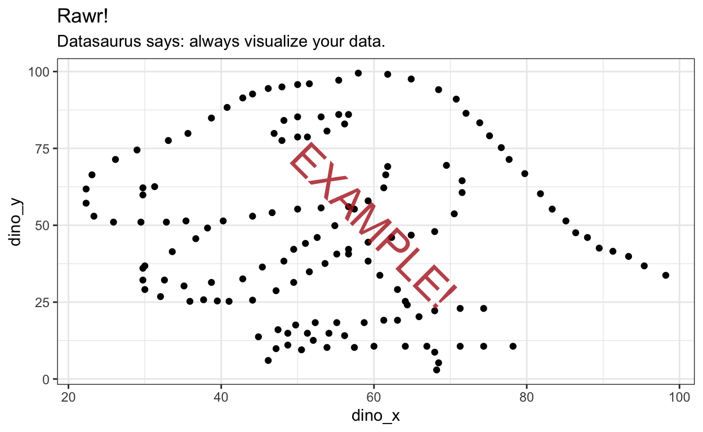

Intro
Remember that constructing a whole plot in one call is roughly* equivalent to constructing the core of a plot, assigning it to a variable, and then adding another element to that variable. So these two chunks should produce identical plots:
iris %>%
ggplot(aes(x = Species, y = Petal.Length, fill = Species)) +
geom_boxplot() +
theme_bw()
plot_iris <- iris %>%
ggplot(aes(x = Species, y = Petal.Length, fill = Species)) +
geom_boxplot()
plot_iris + theme_bw()
Data-related aesthetics


Modifying axis label aesthetics for readability
When plotting a discrete variable along one axis (in these examples, the x-axis), it often makes sense to change the order of variable levels along that axis so that the order of variables along the axis adds meaning to the plot.
For example, let’s look at a different dataset now: the area (in square miles) of the 50 US states. This dataset helps illustrate the benefits of the next few techniques, in particular because it has a lot of levels (50!) of a discrete variable.
vignette demonstrating how the forcats package can make plots more sensible.
us_states_by_area <- tibble(state = datasets::state.name,
abbrev = datasets::state.abb,
area = datasets::state.area,
region = datasets::state.region,
division = datasets::state.division)These next exercises demonstrate features you might use when plotting discrete data with a lot of levels.
If we plot a lollipop plot with state on the x-axis, and area on the y-axis, we can reap the benefits of both bar graphs and point graphs for this type of magnitude data.
plot_us_states_by_area <- us_states_by_area %>%
ggplot(aes(x = state, y = area)) +
# the stick of the lollipop
geom_segment(aes(xend = state, y = 0, yend = area)) +
# the candy of the lollipop
geom_point()
plot_us_states_by_areaThe state names along the x-axis are unreadable because they are written on top of each other! Next, we’ll practice a few techniques for adjusting the axis labels for levels of a discrete variable that specifically mitigate overplotted labels like these.
Rotating axis labels

Rotate the axis labels for the state names by 45 degrees counter-clockwise.
plot_us_states_by_area
Now, rotate the axis labels for the state names by 45 degrees clockwise instead.

plot_us_states_by_area
Dodging axis labels
Now “dodge” the axis labels so that every other state name appears slightly lower than the baseline.

plot_us_states_by_area
I personally prefer rotating axis labels over dodging them, but either might be the best choice depending on the plot. We’ll use counterclockwise-rotated axis labels for the rest of the plots in this section.
Reordering levels
From our current plot, we can get information about smaller and larger states, but the order is not very sensible. To see the very largest states, a graph reader can go to the tallest lollipops and then look down to the axis label, but they have to jump around from lollipop to lollipop because the states are ordered alphabetically along the x-axis, not by area.

Use the function demonstrated in the forcats vignette section: Ordering by another variable to reorder the states along the x-axis by area from smallest to largest.

us_states_by_area %>%
ggplot(aes(x = state, y = area)) +
geom_point() +
scale_x_discrete(guide = guide_axis(angle = 45))
Now flip it, so the states are ordered from largest to smallest instead.

us_states_by_area %>%
ggplot(aes(x = state, y = area)) +
geom_point() +
scale_x_discrete(guide = guide_axis(angle = 45))
Changing colors of data elements
Applying pre-made color schemes

us_states_by_area %>%
ggplot(aes(x = fct_reorder(state, area), y = area)) +
geom_segment(aes(xend = state, y = 0, yend = area)) +
geom_point() +
scale_x_discrete(guide = guide_axis(angle = 45))
Applying custom color schemes
us_states_by_area %>%
ggplot(aes(x = fct_reorder(state, area), y = area, color = region)) +
geom_segment(aes(xend = state, y = 0, yend = area)) +
geom_point() +
scale_x_discrete(guide = guide_axis(angle = 45))
Theme (non-data) aesthetics
plot_datasaurus <- datasauRus::datasaurus_dozen_wide %>%
ggplot(aes(x = dino_x, y = dino_y)) +
geom_point() +
labs(title = "Rawr!",
subtitle = "Datasaurus says: always visualize your data.")Changing overarching theme
Add a theme command to render this plot in ggplot2’s dark-on-light theme.

plot_datasaurus
Now, add a theme command to render this plot in ggplot2’s “minimal” theme.

plot_datasaurus
Now, add a theme command to render this plot in ggplot2’s “classic” theme (designed to look like base R’s default plots).

plot_datasaurus
Changing colors
Changing text color

Change the color of all text elements on the plot to “chartreuse4”.
plot_datasaurus
Change the color of just the plot title to “chartreuse4”.

plot_datasaurus
Changing grid line color
Change the color of all grid lines on the plot to “deeppink”.

plot_datasaurus
Now, change the color of the major (thicker) grid lines to “deeppink”, and the minor (thinner) grid lines to “lightpink”.

plot_datasaurus
Changing inner plot background color

plot_datasaurus
Changing full background color

plot_datasaurus
Changing fonts

plot_datasaurus